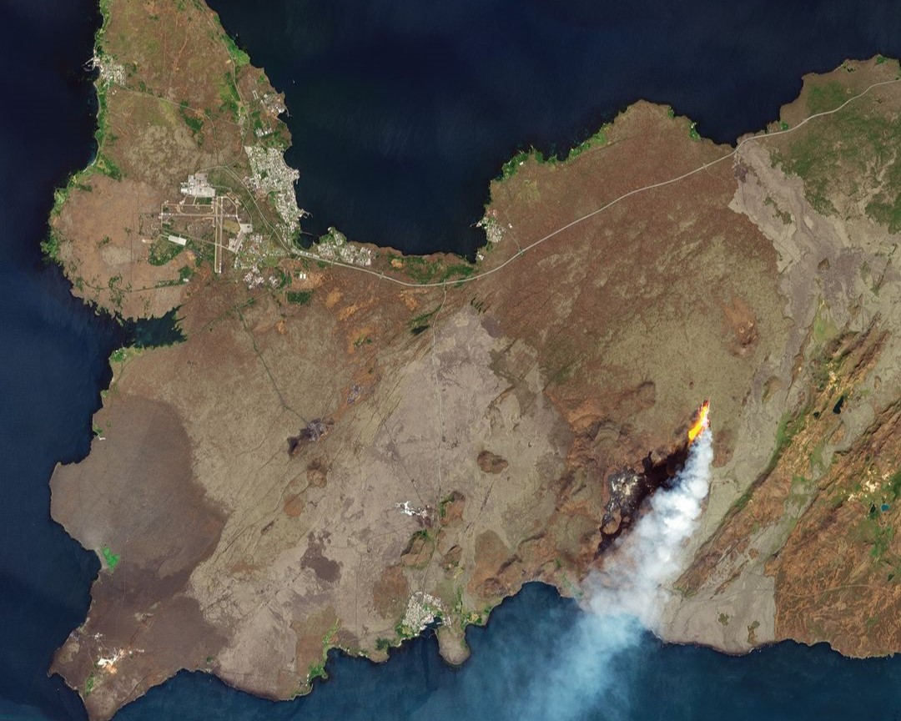
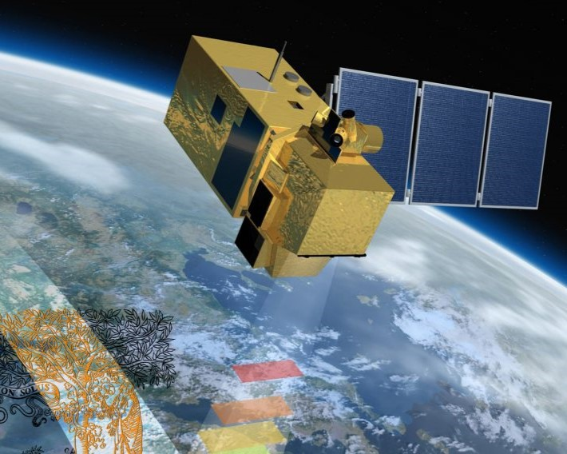
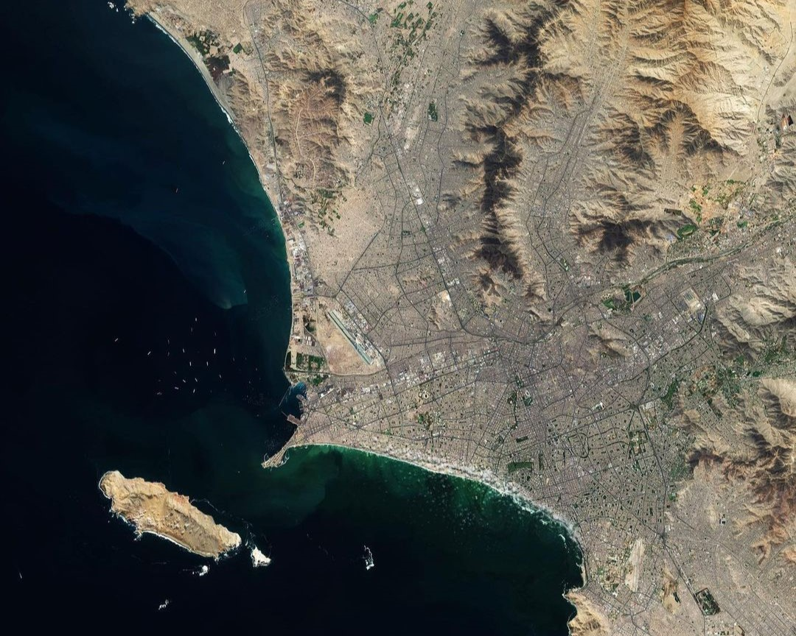

9 mins
When a volcano erupts, satellites can help us detect and track volcanic gas emissions, changes in ground deformation as well as volcanic ash plumes.

9 mins
Remote sensing uses the properties of electromagnetic waves emitted, reflected or diffracted from Earth to space to create data that can be used to improve natural resources management and land use and to protect the environment.

9 mins
This Copernicus Sentinel-2 image takes us to Lima, the capital and largest city of Peru.